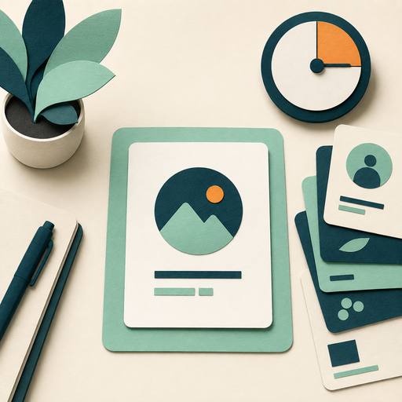
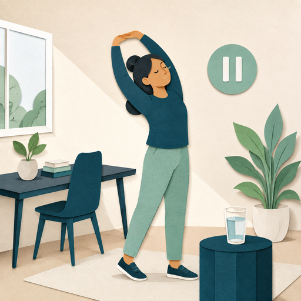

The multitasking myth
The illusion of doing two or more tasks at once is usually rapid task switching.

Truth moment
One task at a time
Organize your time so each priority receives focused attention.
Focused work
When pressure rises, focused attention helps you stay effective.
Which practice supports focus?
Regular breaks
Breaks can increase concentration, protect mental energy, and reduce the risk of burnout.

A short reset
You have been working continuously and your attention is fading. Which response is most helpful?
Choose a response
Apply the idea
Choose one practical action for protecting your attention.
Select one